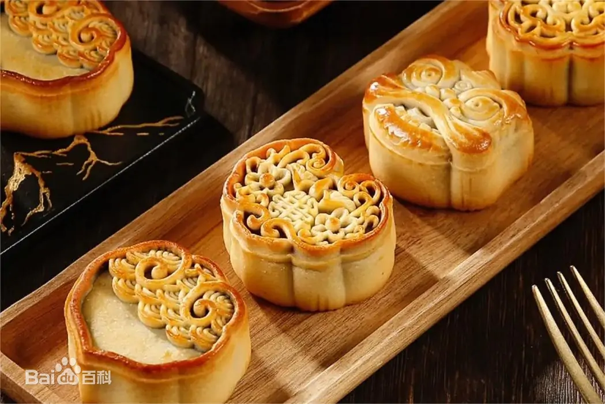
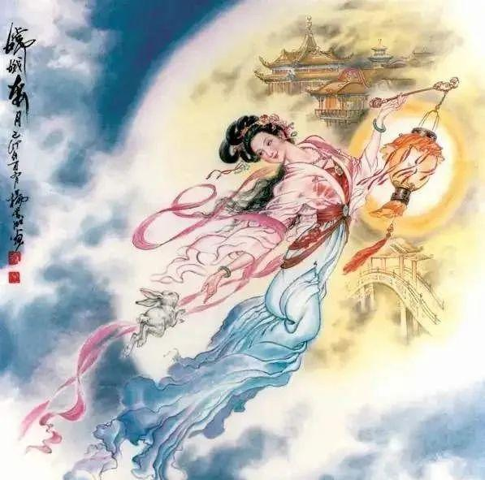

中秋习俗主要有：祭月、赏月、燃灯、吃月饼、赏桂花、饮桂花酒、吃芋头、食藕盒子等。
●祭月
祭月，在中国是一种十分古老的习俗，实际上是古人对“月神”的一种崇拜活动。在古代有“秋暮夕月”的习俗。
夕月，即拜祭月神。自古以来，在广东部分地区，人们都有在中秋晚上拜祭月神（拜月娘、拜月光）的习俗。祭月作为中秋节重要的祭礼之一，从古代延续至今。
●吃月饼
月饼，又叫月团、丰收饼、宫饼、团圆饼等，是古代中秋祭拜月神的贡品。月饼最初是用来祭奉月神的供品，后来人们逐渐把中秋赏月与品尝月饼，作为家人团圆的一大象征。月饼象征着大团圆，人们把它当作节日食品，用它祭月、赠送亲友。
●猜谜
中秋月圆夜在公共场所挂着许多灯笼，人们都聚集在一起，猜灯笼身上写的谜语。因为是大多数年轻男女喜爱的活动，同时在这些活动上也传出爱情佳话，因此中秋猜灯谜也被衍生成了一种男女相恋的形式。
1、嫦娥奔月
嫦娥是后羿的妻子，传说后羿射下了九个太阳，救了大家，神仙赐予后羿长生不老药，后羿的徒弟想偷取，被嫦娥吞下，成仙并飘向月亮的故事。
2、吴刚伐桂
吴刚是炎帝时代的人物，因杀死妻子的奸夫受到炎帝的惩罚，到月宫砍伐桂树，但桂树随砍随合，玉帝把这种永无休止的劳动作为对吴刚的惩罚。
3、玉兔捣药
相传月亮之中有一只兔子，浑身洁白如玉，所以称作“玉兔”，这种白兔拿着玉杵，跪地捣药，制成蛤蟆丸，服用此等药丸可以长生不老和成仙。
4、月饼起义
元朝末年，人民不堪忍受残暴统治，纷纷起义，张士诚利用中秋节互相馈赠麦饼的机会，在其中夹上纸条，约定中秋夜起义，形成吃月饼的习俗。
